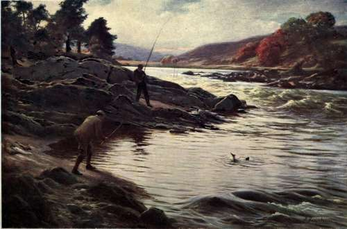

Salmon Fishing | by W. Earl Hodgson
Contains authors experience on Salmon Fishing, places, and equipment involved are described in length. A detailed list of different "Flies" are also included with colour photographs.
| Title | Salmon Fishing |
| Author | W. Earl Hodgson |
| Publisher | A. & C. Black, Ltd. |
| Year | 1906 |
| Copyright | 1906, A. & C. Black, Ltd. |
| Amazon | Salmon Fishing |
By W. Earl Hodgson, Author Of "Trout Fishing"
With A Frontispiece By Joseph Farquh Arson, A.R.A., A Facsimile In Colours Of A Model Set Of Flies For Scotland, Ireland, England And Wales, Illustrations Of Angling Scenes Characteristic Of These Parts Of The United Kingdom, And Pictures Of Salmon Passes
Dedicated To 'Miss Winsome', Now My Wife This Book On A Sport She Delights In Spring, 1906
Salmon Fishing On The Dee From the Picture by Joseph Farquharson, A.R.A
 Prefatory Note
Prefatory Note- In writing this book I have, with permissions, made use of papers that I had the honour of contributing to The Times The Cornhill Magazine The Pall Mall Gazette The Monthly Review The Fishi...
- Chapter I. Spirit Of The Chase
- Cosmos and Man's Mind-A Quality of Living Literature- Stag-Fright-Salmon-Fright-The Judge's View-Experience Teaches - Off to the Fishing-A Jovial Millionaire- Wanderin' i' the Mind - How Fishing Dif...
- A Quality Of Living Literature
- There is comfort in recalling this conversation. It is good to feel assured that the spirit of the sportsman is in one respect identical with that of the supreme rationalist, the poet. The sportsman h...
- The Judge's View-Experience Teaches
- Who shall blame him ? When he has caught one salmon, the Judge will be as ready for the next as any seasoned sportsman; but it is not astonishing that recollection of his first battle, in which he was...
- How Fishing Differs From All Other Sports
- He was, I think, quite right. Some men are born to be sportsmen; others are not. To any one who has the instinct of the chase, the first salmon, probably caught at a time when his nature was most impr...
- A First Salmon - In Trouble On The Dee
- This reminiscence is not set down with oblique intent. It is not primarily designed to deride Wideawakery. It is intended to show how sensitive the mind is when exalted by the excitement of sport. Sen...
- The Vividness Of Memory
- This incident, even to the minute details, lives in the memory, and so does many another affair of the same kind. The vivid permanence of the impressions is rather puzzling. At the time of fishing the...
- Model Set Of Flies
- Plate I 1. Jock Scott. 2. Silver Doctor. 3. Black Doctor. 4. Blue Doctor. 5. Butcher. 6. Silver Grey. 7. Red Drummond. 8. Wilkin...
- Chapter II. The Elusive Quarry
- His Nomadic Life-Does he Feed in Fresh Water ?-Opinions of Mr. Huxley and other Scientific Naturalists - A Humorous Analogy-The Old-fashioned Understanding -Foible of the Intellectuals-An Instructive ...
- His Nomadic Life
- The salmon behaves in no such intelligible manner. His is a stand-off disposition. Although we may have played with him by the half-hour in autumn, and that on more than one occasion, he does not reco...
- Does He Feed In Fresh Water ?
- Is it certain, then, that the salmon do not feed when in fresh water ? Among the few naturalists to whom it is familiar, this question, as has been mentioned, finds an answer almost unanimous. It i...
- Opinions Of Mr. Huxley And Other Scientific Naturalists
- Such is the testimony on one side of the question. The other side, the view of the sportsmen whom Dr. Barton finds it so hard to convince, is modestly presented by Major Traherne. He mentions that thr...
- A Humorous Analogy-The Old-Fashioned Understanding
- At this stage of our inquiry the possibility that salmon seize a lure from some motive other than hunger has nothing to do with the case. The real questions are: Do salmon in fresh water ever, before ...
- A Humorous Analogy-The Old-Fashioned Understanding. Continued
- What are we to think of any theory about the habits of the salmon that leaves out of account the fish of these streams of the third class ? Excepting the particular tribe mentioned by Mr. Grimble, whi...
- An Instructive Rise
- That, however, is really all that can be said in favour of the modern theory. The arguments on the other side are at least equally considerable. In 1891 the Scottish Fishery Board was, through its exp...
- Mr. Rudyard Kipling's Testimony
- I think that its ultimate judgment will be a compromise. Why should it be deemed improbable that a fish takes a fly from hunger at one time and from some emotional impulse at another ? To say that ...
- Chapter III. Rod, Reel, And Line
- Analogy from Golf-Built-Cane-Greenheart-Other Woods - A Delicate Instrument - Balance - Flexibility- How Distributed-Grip of the Rod-Throwing a Fly- Correct Casting Rare-Tapered Lines and Untapered-...
- A Delicate Instrument
- This, which I discovered on a trout lake, is partly true on a salmon river. The greenheart is the more mettlesome weapon. On the other hand, the difference between salmon rods is not so perceptible as...
- Throwing A Fly
- There, I think, we have the whole truth about that puzzling subject, throwing a fly. Many writers have striven to explain it, and have not succeeded. Others, wiser perhaps, have touched upon it only...
- An Accidental Solution
- Experiment led to more than that. It led to the discovery, that in regarding lightness as desirable in a line mankind had been wrong from time immemorial. Besides being much less liable to tangle, the...
- Chapter IV. On Rivers
- Rage, Curiosity, or Playfulness?-Flies-How Salmon Flies Differ from Trout Flies-An Empiric Craft-The Dusty Miller's Success-Salmon have Marked Preferences- Flies of the Seasons-An Incident on the Tay-...
- How Salmon Flies Differ From Trout Flies
- Some of the flies are of Scotch patterns; some of Irish; some of English. The flies are types of texture and of shape. They are not standards of size. Size ranges between that of the large and that of...
- How Salmon Flies Differ From Trout Flies. Part 2
- Miss Winsome and I had resolved to visit a certain pool which in September had yielded us on the average a brace of trout, usually about 2 lb. each, daily. Lest that should seem sport too mild for con...
- How Salmon Flies Differ From Trout Flies. Part 3
- A little farther down there is a quick bend in the river. Behind the turn the water on our side, excepting in time of flood, is shallow and quiet. By this bay we found ourselves at length. The steely ...
- Flies Of The Seasons
- Spring and autumn, which as a rule are the seasons, are not so often disturbed by subtle complexities of weather as are the months of summer. It is only now and then that they witness the conditions w...
- Flies Of The Seasons. Continued
- Having reached the autumn, our pen has involuntarily broken from its habitual diffidence. It has been treating of sport as certain. Perhaps that is not far wrong. They are foolish who encourage the im...
- A Wonderful Discovery
- The civilised world will be astounded to learn that the ultimate cause of trolling, systematically practised, was none other than Mr. Gladstone. He was staying at Butterstone, in Perthshire. Mr. Georg...
- Chapter V. On Lakes
- Spring in the Highlands-Lakes near the Sea and Lakes Inland-Is Feeling Cold an Illusion ?-The Boatman's Craft and Subtlety-What the Salmon may not See-A Remarkable Incident-Do Salmon Dose ?-Whence...
- Colours Of Minnows
- Experience enough to keep this expectation active is perhaps necessary to full enjoyment on the wild water; but the angler need not be highly skilled. Success with the salmon depends upon conditions d...
- Colours Of Minnows. Continued
- In the second place, there actually seems some reason for believing that a disturbance of the water is not always a disadvantage to the angler. I have never myself had any experience to suggest this p...
- Large Lakes-Possibilities Of The Deeps-Wind And Waves
- Salmon lakes, as a rule, are large tracts. One feels rather at sea on a first visit to Loch Tay, or to Loch Ness, or to Lough Derg; even smaller lakes present a problem. Where are you to begin, and wh...
- Chapter VI. Are The Salmon Declining ?
- The General Belief-Is it Well Founded ?-A Characteristic of Popular Opinion-Reasons for Misgiving-Reasons for Hope-Survey of the British Islands. In all parts of the United Kingdom one finds a gene...
- Survey Of The British Islands
- Why not put those questions to a test? Why not make a survey of the main rivers in the United Kingdom ? I have done so. The results will be found in chapters immediately following. The information ...
- Chapter VII. Scotland
- Dee - Don-Deveron-Ugie - Nairn - Findhorn - Spey - Beauly-Spean-Lochy-Moidart-Ness-Loch Ness- Waters of the Hebrides-Ullapool-Carron-Cannaird- Oiskaig-Polly-Alness-Conon-Berriedale and Lang-well-Helms...
- Scotland. Part 2
- The Don, in Aberdeenshire, is in a slightly unsettled condition; but the outlook is bright. Seventy-eight miles long, and of good flow, it was a first-class river once, and may be so again. Lord Kinto...
- Scotland. Part 3
- Major Rose adds: About nine years ago-I think in August-I had strange luck. There having been heavy rain for two or three hours in the morning, I dug up a few worms and went down to the Holme Bridge ...
- Scotland. Part 4
- The Spean, flowing out of Loch Laggan, in Inverness-shire, has a high reputation. It is the chief tributary of the Lochy, into which it falls at Muccomer Pool, seven miles from the sea. Sir John Ramsd...
- Scotland. Part 5
- Some of the waters mentioned by Lord Fincastle are fished by members of the Hebridean Sporting Association, a club formed in Glasgow not very long ago. Mr. George D. Stirling, the Secretary, sends a p...
- Scotland. Part 6
- The Hope, Loch Hope, and Strathmore Water have improved since the withdrawal of the nets at the mouth, in 1887; but recently the sport, though fair, has gone back a little. The angling is at its best ...
- A Lesson On Loch Nell
- The Etive, in Argyllshire, maintains a good reputation. Mr. Ian T. Malcolm of Glenetive, who has fished it regularly for six seasons, writes:- As far as I am able to judge, there has been no mark...
- A Lesson On Loch Nell. Part 2
- This account of Loch Tay was written at the close of 1905. Now, when reading the proof-sheets, on March 5, 1906, I am able to state that the theory which it presents has had very remarkable justificat...
- A Lesson On Loch Nell. Part 3
- Loch Lubnaig, in Perthshire, is a water which one is always glad to visit. It lies picturesquely beside Ben Ledi, and until quite recent years had a good head of fish in the spring. Lord Esher, who re...
- A Lesson On Loch Nell. Part 4
- Lord Galloway, whom I asked for information on these streams, referred my queries to Mr. James Drew of Craigencallie, for forty years Agent on the Galloway estates. Mr. Drew answered :- The Cree, ...
- A Lesson On Loch Nell. Part 5
- The Cairn, which rises in Mr. James M'Call's estate of Caitloch, and flows into the Nith near Dumfries, yields a salmon now and then on the lower reaches. The Annan has been declining for twelve ye...
- A Lesson On Loch Nell. Part 6
- Low had written to his boatman, John Aitken, to give me full use of his rods, lines, flies, and boats, and had, moreover, instructed his boatman to exert himself to the utmost to give me good sport. W...
- A Lesson On Loch Nell. Part 7
- Indeed, 1904 was the worst on record. It yielded only 205 salmon and 58 grilse, with a few sea-trout, for the whole river. There is a proposal, promoted by Lord Dalhousie, to remove the nets, of which...
- Chapter VIII. Ireland
- Brosna - Shannon - Feale - Erne - Bundrowes - Lough Melvin - Drowes - Sligo - Ballysadare - Owenmore- Burrishoole - Claregalway - Galway - Ballynahinch - Lough Furnace-Lough Feeagh-Bunowen-Doo Lough -...
- Ireland. Part 2
- The Feale, flowing through County Limerick and County Kerry, has been falling off. Mr. C. Mark Montserrat, Kilmorna, attributes this mainly to the continuous destruction of fish and fry by poison. It ...
- Ireland. Part 3
- Carefully kept records covering over thirty years show that the productiveness of the river diminished. The causes were over-netting and poaching. Now, however, there is hope of recovery. A goodly p...
- Ireland. Part 4
- Mr. Scrope Doig, Oughterard, writing at the request of Lord Ardilaun, says :- Most people now recognise the fact that the preservation of salmon and trout is a national asset, and of the very gre...
- Ireland. Part 5
- I recollect when there were no fishing laws. Then the river was full of 6almon. There were no nets on the tidal portion and no facilities for sending fish to markets far away. When railways were ope...
- Ireland. Part 6
- My theory is that most of the late-running fish are worthless except for the crop of peal or grilse they yield, and only breed fish that in their turn run late, coming up heavy in spawn at the close o...
- Ireland. Part 7
- The river is very much over-netted in the tidal portion, and, worse, in the fresh water, where no net of any sort should be allowed to fish. Net-fishing begins too early and closes too late in the yea...
- Ireland. Part 8
- The numbers of fry turned out are as follow :- 1895 75,000 First year of working. 1896 500,000 ...
- Ireland. Part 9
- The Bush, in County Antrim, is not what it should be. Dr. Traill, Provost of Trinity College, Dublin, says:- I have the right of fishing in the river for three miles along my property, above the ...
- Chapter IX. England And Wales
- Avon-Test-Frome-Axe-Yarty-Otter-Exe- Teign- Dart-Avon, Devonshire-Ernie-Plym-Tamar- Tavy -Gralm-Walkham-Lynher-Fowey-Camel-Taw- Torridge - Lynn - Severn - Wye - Usk - Dwyfawr- D wy fach-E rch - Soch-G...
- England And Wales. Part 2
- The Axe and the Yarty have been falling off. In the belief of Mr. W. H. B. Knight, Chairman of the Fishery Board, one of the chief reasons is that there is now no expansion at the mouth. The river whe...
- England And Wales. Part 3
- Both the Erme and the Avon are prolific in sea-trout near the mouth, the Erme especially producing very large ones, up to 4 or 5 lbs. and more; but my boys and myself have chiefly given our attention...
- England And Wales. Part 4
- The Taw, the Torridge, and the Lynn are the rivers of a Fishery District comprising the whole northern watershed of Devonshire and a small portion of Somerset. Taw and Torridge fall into the sea throu...
- England And Wales. Part 5
- As regards the Crown waters of the Wye, Mr. Philip Baylis says :- There is no falling-off in the stock. On the contrary, for the last two years there has been an improvement, which, in all probabi...
- England And Wales. Part 6
- The Seiont, the Gwyrfai, and the Llyfni have suffered from drought. Mr. R. Pughe Griffiths, Carnarvon, writes:- When the rivers once fall it requires a great deal of rain to fill them. The decliv...
- England And Wales. Part 7
- In the spring hardly any salmon have been taken by the rod. This is a result of continuous netting in the lower reaches and the estuary. In the waters immediately above those leased by the Carlisle ...
- England And Wales. Part 8
- The Wear runs through a district in which there are many collieries and other works. It is much polluted, and, as the industrial enterprises employ thousands of people, it is difficult to cope with th...
- England And Wales. Part 9
- From these and other records it is clear that there was a very rapid decline in the salmon fishings of the Thames during the last few years of the eighteenth century and the first quarter of the nine...
- Chapter X. Britains Beyond The Seas
- Canada-Newfoundland-British Columbia-South Africa- Australasia. In the very first letter I received in answer to my inquiries about waters at home, there was a remark that suggested the desirabilit...
- Memorandum On Comparative Conditions Of Salmon Angling In Canadian Atlantic Waters, 1906
- Generally The Provincial authorities of Quebec, judging from reports of the different angling clubs which are just being received, conclude that, generally speaking, the present condition of salmon...
- Memorandum On Comparative Conditions. Part 2
- Mingan River; St. John, Romaine, and Wat-sheeshoo Rivers.-These rivers are within the Mingan Seigniory, and are all reported as being in as good condition as they ever were, notwithstanding considerab...
- Memorandum On Comparative Conditions. Part 3
- My own opinion is that the salmon in Newfoundland would greatly benefit by the Government leasing rivers to private persons under the conditions on which the Canadian rivers are leased. Of salmon...
- Chapter XI. Storage And Passes
- Improving the Thurso-Making a Lake-Results of Agricultural Drainage-Too much Water, and Too Little-Misgivings about Storage Unfounded-The Helmsdale- Remarkable Success of Storage-Loch Lee and the Nort...
- Storage And Passes. Part 2
- The prospective success of the experiment on the Thurso is more than hypothetical. What is being done there, as has been indicated, is not a groping in the dark. The Helmsdale, in the northern part...
- Storage And Passes. Part 3
- 2. 12 And 25 Lbs. Salmon Caught By Mr. J. B. Taylor In The Helmsdale. The tenants sought to induce a run from the sea, and hoped that the salmon would be distributed throughout the waters of the di...
- Storage And Passes. Part 4
- Many thousands of pounds have been spent on the construction of passes that were useless. As a rule the problem was looked at by some engineering eye that had little or no regard to what a salmon c...
- From Despair To Hope
- A proper pass is one through which salmon can go either in a high flood or when the water, though low, is sufficient to entice a run. It must be capable of inducing fish to enter it at any time. Every...
- A Bright Prospect
- What is everybody's business is nobody's business. Probably that is why the science and art of conserving rivers has made such haphazard progress. Now at length, however, there is hope. Any river that...
- Chapter XII. The Otter's Stone Pool
- No Poaching -Miss Winsome-A Charming Meal-Yellow Sally-Sea-trout and Salmon-Claret and Champagne -An Error of the Head-Two Kinds of Salmon- Whir-r-r-rrr !-A Pretty Picnic-A Valiant Gamekeeper-Escape-A...
- Miss Winsome-A Charming Meal
- One day, however, Miss Winsome made a suggestion in which there seemed no harm. We had been fishing in the customary parts all morning, and, with comfortably heavy baskets, had reached the end of our ...
- Miss Winsome-A Charming Meal. Continued
- Of course, all that is only Mr. Malloch's opinion. Good enough for me. Sir Herbert Maxwell says that as regards salmon and trout he is the most learned naturalist in the country. Sir Herbe...
- All's Well
- This was our opportunity. We used it with dignified leisure. The Enemy's hosts were gone. At the best they could not be expected to rescue the laddie and the salmon in less than half an hour. Thus, Mi...
- Companion Volumes By The Same Author
- Trout Fishing A Study of Natural Phenomena By William Earl Hodgson New Edition Containing a facsimile in Colours of a Model Book of Flies, for Stream and Lake, arranged according to the Mo...